这一章节将会全面介绍 Django 的身份认证系统，我们将实现注册、登录、注销、密码重置和密码修改的整套流程。
在接下来的部分，你会看到一些和身份验证有关线框图。之后是一个全新 Django 应用的初始化设置。至今为止我们一直在一个名为 boards 的应用中开发。不过，所有身份认证相关的内容都将在另一个应用中，这样能更好的组织代码。
线框图 我们必须更新一下应用的线框图，首先，我们需要在顶部菜单添加一些新选项，如果用户未通过身份验证，应该有两个按钮：分别是注册和登录按钮。
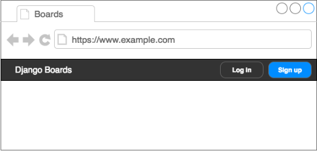
如果用户已经通过身份验证，我们应该显示他的名字，和带有我的账户，修改密码，登出这三个选项的下拉框
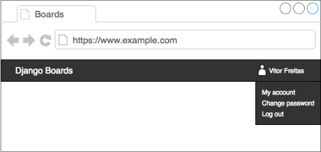
在登录页面，我们需要一个带有 username 和 password 的表单，一个是登录的按钮和可跳转到注册页面和密码重置页面的链接
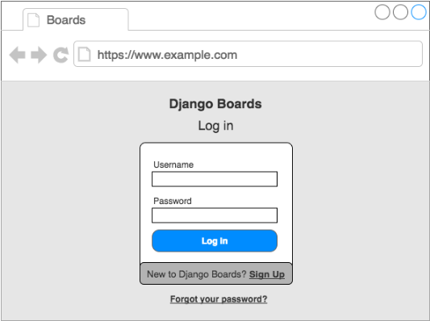
在注册页面，我们应该有包含四个字段的表单 username,email,address,password 和 password confirmaton。同时，也应该有一个能够访问登录页面链接。
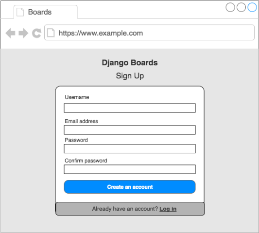
密码重置页面上，只有 email address 字段的表单
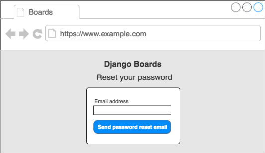
之后，用户在点击带有特殊 token 的重置密码链接以后，用户将被重定向到一个页面，在那里他们可以设置新的密码
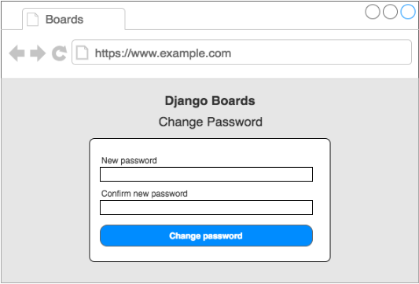
初始设置 要管理这些功能，我们可以在另一个 APP 中将其拆解。在项目根目录中的 manage.py 文件所在的同一目录下，运行一下命令以创建一个新的 APPdjango-admin startapp accounts
项目目录结构应该如下：
1 2 3 4 5 6 7 8 |-- myproject/ | |-- accounts/ <-- 新创建的app | |-- boards/ | |-- myproject/ | |-- static/ | |-- templates/ | |-- db.sqlite3 | +-- manage.py
下一步，在 settings.py 文件中将 accounts app 添加到 INSTALLED_APPS
1 2 3 4 5 6 7 8 9 10 11 12 13 14 15 myproject/settings.py INSTALLED_APPS = [ 'django.contrib.admin', 'django.contrib.auth', 'django.contrib.contenttypes', 'django.contrib.sessions', 'django.contrib.messages', 'django.contrib.staticfiles', 'widget_tweaks', 'boards', 'accounts' ]
注册 我们从创建注册视图开始，首先，在 urls.py 文件中配置新的路由：
1 2 3 4 5 6 7 8 9 10 11 12 13 14 15 16 17 18 19 20 21 22 myproject/urls.py from django.contrib import admin from django.urls import path,re_path # 从 boards APP 中导入 views from boards import views # 为了避免和 boards 的view 视图产生冲突 from accounts import views as accounts_views urlpatterns = [ path('admin/', admin.site.urls), # 调用views.home path('',views.home,name='home'), path('signup',accounts_views.signup,name='signup'), # 分页 为了适配之前的 url 路由适配方法 所以才用 re_path # re_path('boards/(?P<pk>\d+)/$',views.board_topics,name='board_topics'), # 修改为当前主流的 path 适配方法 path('boards/<int:pk>/',views.board_topics_2,name='board_topics2'), path('boards/<int:pk>/new/',views.new_topic,name='new_topic'), path('jsrender',views.jsrender,name='jsrender'), # jsrender 传递参数 ]
现在我们在 accounts app 中编辑 views.py 新创建一个名为 signup 的视图函数1 2 3 4 5 6 7 accounts/views.py from django.shortcuts import render # Create your views here. def signup(request): return render(request,'signup.html')
然后我们需要将 signup.html 进行补充
1 2 3 4 5 6 7 templates/signup.html {% extends 'base.html' %} {% block content %} <h2>Sign up</h2> {% endblock %}
这是我们现在的效果，还需要慢慢的补充。
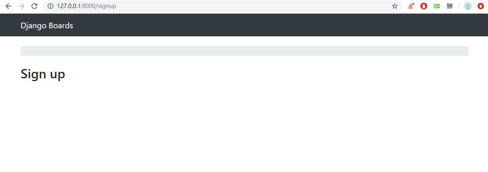
我们不需要 boards 的导航栏，所以修改下 base.html1 2 3 4 5 6 7 8 9 10 11 12 13 14 15 16 17 18 19 20 21 22 23 24 25 26 27 28 29 30 templates/base.html {% load static %} <!DOCTYPE html> <html> <head> <meta charset="utf-8"> <title>{% block title %}Django Boards{% endblock %}</title> <link rel="stylesheet" href="{% static 'css/bootstrap.min.css' %}"> {% block stylesheet %}{% endblock %}{#这里#} </head> <body> {% block body %} <nav class="navbar navbar-expand-lg navbar-dark bg-dark"> <div class="container"> <a class="navbar-brand" href="{% url 'home' %}">Django Boards</a> </div> </nav> <div class="container"> <ol class="breadcrumb my-4"> {% block breadcrumb %} {% endblock %} </ol> {% block content %} {% endblock %} </div> {% endblock %} {#这里#} </body> </html>
将 signup.html 的内容也进行部分的修改
1 2 3 4 5 {% extends 'base.html' %} {% block body %} <h2>Sign up</h2> {% endblock %}
这是最终效果
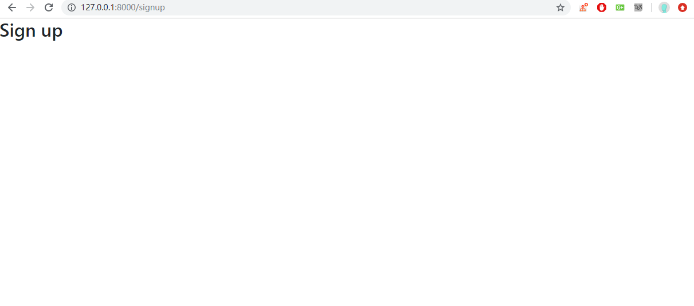
是时候创建注册表单了，接下来我们可能会用到 UserCreationForm 的内置表单
1 2 3 4 5 6 7 8 9 10 11 12 13 14 15 16 17 18 19 20 21 22 accounts/views.py from django.shortcuts import render from django.contrib.auth.forms import UserCreationForm # Create your views here. def signup(request): form = UserCreationForm() return render(request,'signup.html',{'form':form}) templates/signup.html {% extends 'base.html' %} {% block body %} <div class="container"> <h2>Sign up</h2> <form method="post" novalidate> {% csrf_token %} {{form.as_p}} <button type="submit" class="btn btn-primary">Create an account</button> </form> </div> {% endblock %}
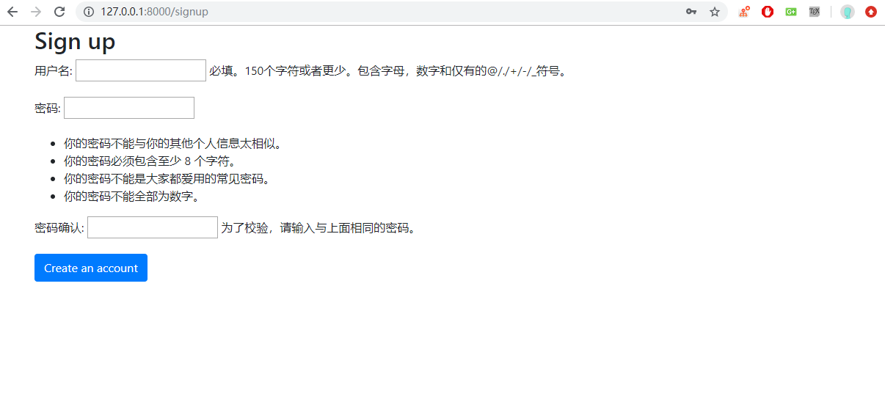
复用表单模板 在 Teamplates 文件夹中，创建一个新的文件夹命名为 includes。1 2 3 4 5 6 7 8 9 10 11 12 13 14 15 16 17 18 19 20 21 22 23 24 25 26 27 28 29 30 31 templates/includes/form.html {% load widget_tweaks %} {% for field in form %} <div class="form-group"> {{ field.label_tag }} {% if form.is_bound %} {% if field.errors %} {% render_field field class="form-control is-invalid"%} {% for error in field.errors %} <div class="invalid-feedback"> {{ error }} </div> {% endfor %} {% else %} {% render_field field class="form-control is-valid" %} {% endif %} {% else %} {% render_field field class="form-control" %} {% endif %} {% if field.help_text %} <small class="form-text text-muted"> {{ field.help_text|safe }} </small> {% endif %} </div> {% endfor %}
我们就可以看到前端页面有了非常好的改善
然后修改 signup.html 的部分代码引用我们的表单模板
1 2 3 4 5 6 7 8 9 10 11 12 13 14 templates/signup.html {% extends 'base.html' %} {% block body %} <div class="container"> <h2>Sign up</h2> <form method="post" novalidate> {% csrf_token %} {% include 'includes/form.html' %} <button type="submit" class="btn btn-primary">Create an account</button> </form> </div> {% endblock %}
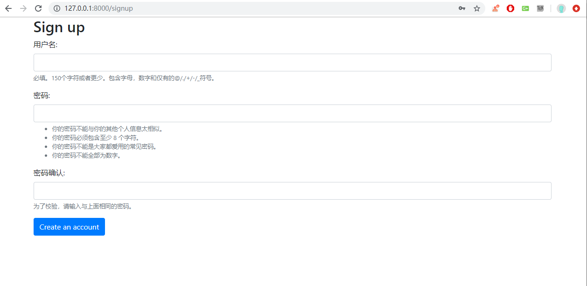
视图 表单模板写好之后，我们只需要写好 View 即可。类似 new_topic 的表单处理视图函数
1 2 3 4 5 6 7 8 9 10 11 12 13 14 15 16 17 18 19 20 21 22 accounts/views.py from django.shortcuts import render,redirect from django.contrib.auth import login as auth_login from django.contrib.auth.forms import UserCreationForm # Create your views here. def signup(request): if request.method=='POST': # 对表单进行赋值 form = UserCreationForm(request.POST) # 判断表单是否合适 if form.is_valid(): # 存储数据 user = form.save() # 手动验证数据是否合适 auth_login(request,user) # 重定向到首页 return redirect('home') else: form = UserCreationForm() # 如果不成功则跳转回原页面 return render(request,'signup.html',{'form':form})
验证是否登录 我们要怎么才知道上述操作是否有效呢？我们可以编辑 base.html 模板来在顶部栏添加用户名称。下面的代码更多的是布局和样式的内容，我们需要关注的逻辑是为什么在所有的位置都可以使用
1 2 3 4 5 6 7 8 9 10 11 12 13 14 15 16 17 18 19 20 21 22 23 24 25 26 27 28 29 30 31 32 33 34 35 36 37 38 {% load static %} <!DOCTYPE html> <html> <head> <meta charset="utf-8"> <title>{% block title %}Django Boards{% endblock %}</title> <link rel="stylesheet" href="{% static 'css/bootstrap.min.css' %}"> {% block stylesheet %}{% endblock %}{#这里#} </head> <body> {% block body %} <nav class="navbar navbar-expand-lg navbar-dark bg-dark"> <div class="container"> <a class="navbar-brand" href="{% url 'home' %}">Django Boards</a> <button class="navbar-toggler" type="button" data-toggle="collapse" data-target="#mainMmenu" aria-controls="mainMenu" aria-expanded="false" aria-label="Toggle navigation"> <span class="navbar-toggler-icon"></span> </button> <div class="collapse navbar-collapse" id="mainMenu"> <ul class="navbar-nav ml-auto"> <li class="nav-item"> <a class="nav-link" href="">{{ user.username }}</a> </li> </ul> </div> </div> </nav> <div class="container"> <ol class="breadcrumb my-4"> {% block breadcrumb %} {% endblock %} </ol> {% block content %} {% endblock %} </div> {% endblock %} {#这里#} </body> </html>
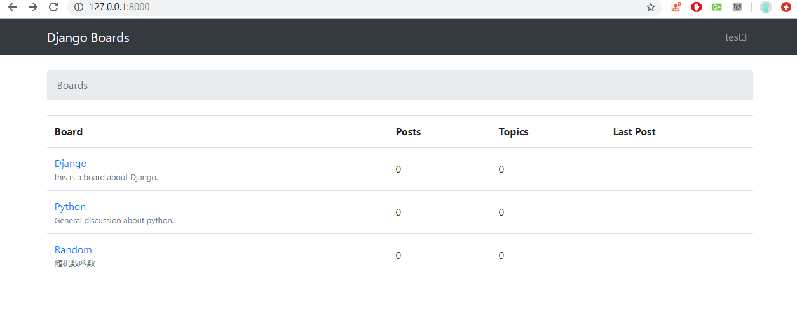
拓展 User 字段 一切都正常，但还缺少 email address 字段。UserCreationForm 不提供 email 字段，但是我们可以对它进行拓展。
在 accounts 文件夹中创建一个名为 forms.py 的文件
1 2 3 4 5 6 7 8 9 10 11 12 accounts/forms.py from django import forms from django.contrib.auth.forms import UserCreationForm from django.contrib.auth.models import User class SingUpForm(UserCreationForm): email = forms.CharField(max_length=254,required=True,widget=forms.EmailInput()) class Meta: model = User fields =('username','email','password1','password2')
现在我们不需要在 views.py 中使用 UserCreateForm，而是导入新的 SignUpForm ，然后使用它
1 2 3 4 5 6 7 8 9 10 11 12 13 14 15 16 17 18 19 20 21 22 23 24 25 26 27 accounts/views.py from django.shortcuts import render,redirect from django.contrib.auth import login as auth_login from django.contrib.auth.forms import UserCreationForm # Create your views here. # 传入新的表单 from .forms import SingUpForm def signup(request): if request.method=='POST': # 对表单进行赋值 # 改动处 form = SingUpForm(request.POST) # 判断表单是否合适 if form.is_valid(): # 存储数据 user = form.save() # 手动验证数据是否合适 auth_login(request,user) # 重定向到首页 return redirect('home') else: # 改动处 form = SingUpForm() # 如果不成功则跳转回原页面 return render(request,'signup.html',{'form':form})
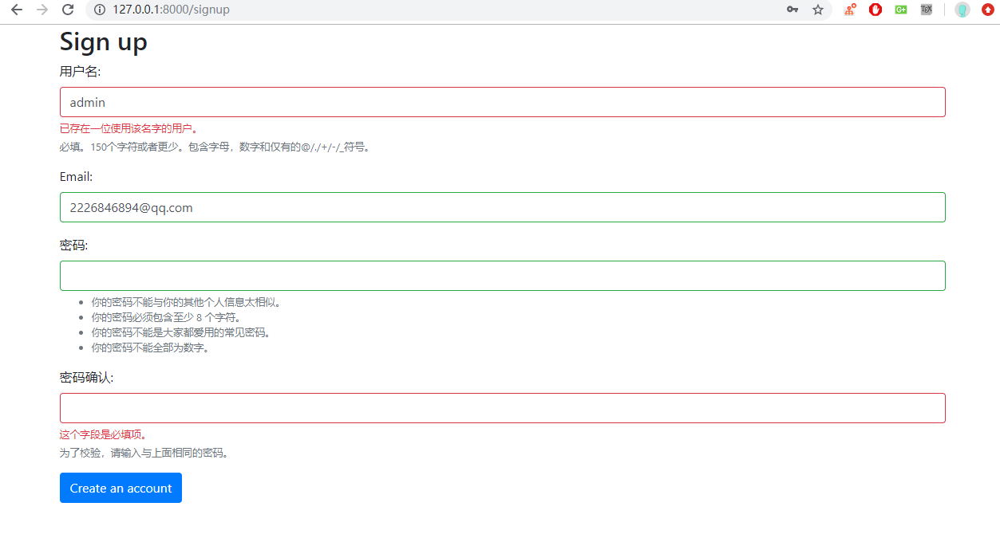
改进注册模板 访问 背景图片网站 并找到一个很好的背景图片作为账户页面的背景，下载下来在静态文件夹中创建一个名为 img 的新文件夹，并将图像放在那里。
之后，在 static/css 创建一个名为 accounts.css 的新 CSS 文件。位置如下
1 2 3 4 5 6 7 8 9 10 11 12 13 14 15 |-- myproject/ | |-- accounts/ | |-- boards/ | |-- myproject/ | |-- static/ | | |-- css/ | | | |-- accounts.css <-- here | | | |-- app.css | | | +-- bootstrap.min.css | | +-- img/ | | | +-- shattered.png <-- here (the name may be different, depending on the patter you downloaded) | |-- templates/ | |-- db.sqlite3 | +-- manage.py
现在编辑 accounts.css 这个文件
1 2 3 4 5 6 7 8 9 10 11 12 13 14 15 16 body{ background-image: url(../img/1.png); } .logo { font-family: 'Peralta',cursive; } .logo a{ color: rgba(0, 0, 0,.9); } .logo a:hover, .logo a:active{ text-decoration: none; }
在 signup.html 模板中，我们可以将其改为使用新的 CSS，并使用 Bootstrap4 组件1 2 3 4 5 6 7 8 9 10 11 12 13 14 15 16 17 18 19 20 21 22 23 24 25 26 27 28 29 {% extends 'base.html' %} {% load static%} {% block stylesheet %} <link rel="stylesheet" href="{% static 'css/accounts.css' %}"> {% endblock %} {% block body %} <div class="container"> <h1 class="text-center logo my-4"> <a href="{% url 'home' %}">Django Examples</a> </h1> <div class="row justify-content-center"> <div class="col-lg-8 col-md-10 col-sm-12"> <div class="card"> <div class="card-body"> <h3 class="card-title">Sign up</h3> <form method="post" novalidate> {% csrf_token %} {% include 'includes/form.html' %} <button type="submit" class="btn btn-primary btn-block">Create an account</button> </form> </div> <div class="card-footer text-muted text-center">Already have an account? <a href="#">Log in</a></div> </div> </div> </div> </div> {% endblock %}
Logout 为了在实现过程保持完整自然流畅的功能，我们还添加注销视图，编写 urls.py 以添加新的路由
1 2 3 4 5 6 7 8 9 10 11 12 13 14 15 16 17 18 19 20 21 22 23 myproject/urls.py from django.contrib import admin from django.urls import path,re_path from django.contrib.auth import views as auth_views # 从 boards APP 中导入 views from boards import views from accounts import views as accounts_views urlpatterns = [ path('admin/', admin.site.urls), # 调用views.home path('',views.home,name='home'), path('signup',accounts_views.signup,name='signup'), # 直接调用 django 模板中自有的模块 path('logout',auth_views.LoginView.as_view,name='logout'), # 分页 为了适配之前的 url 路由适配方法 所以才用 re_path # re_path('boards/(?P<pk>\d+)/$',views.board_topics,name='board_topics'), # 修改为当前主流的 path 适配方法 path('boards/<int:pk>/',views.board_topics_2,name='board_topics2'), path('boards/<int:pk>/new/',views.new_topic,name='new_topic'), path('jsrender',views.jsrender,name='jsrender'), # jsrender 传递参数 ]
我们从 Django 的 contrib 模块导入了 views，我们将其更名为 auth_views 以避免与 boards.views 发生冲突。注意这个视图有点不同：LogoutView.as_view()。这是一个 DJango 的基于类的视图，到目前为止，我们只将类实现为 python 函数。基于类的视图提供了一种更加灵活的方式来扩展和重用视图。稍后我们将讨论更多这个主题。
打开 settings.py 文件，然后添加 LOGOUT_REDIRECT_URL 变量到文件的底部
1 2 3 # 无论登入还是登出都会跳转到首页 LOGOUT_REDIRECT_URL = 'home' LOGIN_REDIRECT_URL = 'home'
在这里我们给变量指定了一个 URL 模型的名称，以告诉 Django 当用户登出时跳转的地址。在这之后，这次重定向就算完成了，只需要访问 127.0.0.1:8000/logout/
但是在登出之前，我们需要先构建一个下拉菜单，这里略去一些下载 js 的步骤，所有的支持文件都放在 static\js 文件夹下。然后我们需要在 base.html 文件中添加这些 js 支持文件
1 2 3 4 5 6 7 8 9 10 11 12 13 14 15 16 17 18 19 20 21 22 23 24 25 26 27 28 29 30 31 32 33 34 35 36 37 38 39 40 41 42 43 44 45 46 47 48 49 50 51 52 templates/base.html {% load static %} <!DOCTYPE html> <html> <head> <meta charset="utf-8"> <title>{% block title %}Django Boards{% endblock %}</title> <link rel="stylesheet" href="{% static 'css/bootstrap.min.css' %}"> {% block stylesheet %}{% endblock %}{#这里#} </head> <body> {% block body %} {#这里#} <nav class="navbar navbar-expand-sm navbar-dark bg-dark"> <div class="container"> <a class="navbar-brand" href="{% url 'home' %}">Django Boards</a> <button class="navbar-toggler" type="button" data-toggle="collapse" data-target="#mainMenu" aria-controls="mainMenu" aria-expanded="false" aria-label="Toggle navigation"> <span class="navbar-toggler-icon"></span> </button> <div class="collapse navbar-collapse" id="mainMenu"> <ul class="navbar-nav ml-auto"> <li class="nav-item dropdown"> <a class="nav-link dropdown-toggle" href="#" id="userMenu" data-toggle="dropdown" aria-haspopup="true" aria-expanded="false"> {{ user.username }} </a> <div class="dropdown-menu dropdown-menu-right" aria-labelledby="userMenu"> <a class="dropdown-item" href="#">My account</a> <a class="dropdown-item" href="#">Change password</a> <div class="dropdown-divider"></div> <a class="dropdown-item" href="{% url 'logout' %}">Log out</a> </div> </li> </ul> </div> </div> </nav> <div class="container"> <ol class="breadcrumb my-4"> {% block breadcrumb %} {% endblock %} </ol> {% block content %} {% endblock %} </div> {% endblock body %} {#这里#} <script src="{% static 'js/jquery-3.2.1.min.js' %}"></script>{#这里#} <script src="{% static 'js/popper.min.js' %}"></script>{#这里#} <script src="{% static 'js/bootstrap.min.js' %}"></script>{#这里#} </body> </html>
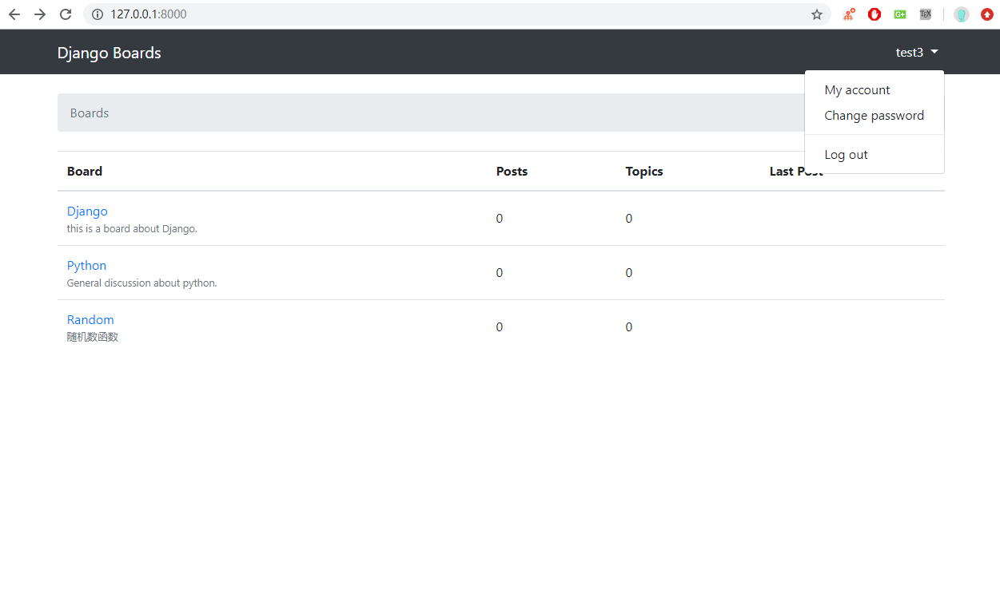
现在已经成功显示出来了，但是无论用户登录与否，下拉菜单都会显示。不同的是在未登录时用户名显示是空的，我们只能看到一个箭头。对其进行修改
1 2 3 4 5 6 7 8 9 10 11 12 13 14 15 16 17 18 19 20 21 22 23 24 25 26 27 28 29 30 <nav class="navbar navbar-expand-sm navbar-dark bg-dark"> <div class="container"> <a class="navbar-brand" href="{% url 'home' %}">Django Boards</a> <button class="navbar-toggler" type="button" data-toggle="collapse" data-target="#mainMenu" aria-controls="mainMenu" aria-expanded="false" aria-label="Toggle navigation"> <span class="navbar-toggler-icon"></span> </button> <div class="collapse navbar-collapse" id="mainMenu"> {% if user.is_authenticated %} <ul class="navbar-nav ml-auto"> <li class="nav-item dropdown"> <a class="nav-link dropdown-toggle" href="#" id="userMenu" data-toggle="dropdown" aria-haspopup="true" aria-expanded="false"> {{ user.username }} </a> <div class="dropdown-menu dropdown-menu-right" aria-labelledby="userMenu"> <a class="dropdown-item" href="#">My account</a> <a class="dropdown-item" href="#">Change password</a> <div class="dropdown-divider"></div> <a class="dropdown-item" href="{% url 'logout' %}">Log out</a> </div> </li> </ul> {% else %} <form class="form-inline ml-auto"> <a href="#" class="btn btn-outline-secondary">Log in</a> <a href="{% url 'signup' %}" class="btn btn-primary ml-2">Sign up</a> </form> {% endif %} </div> </div> </nav>
注意在 Urls.py 中我们绑定的视图函数的 name 和在 HTML 文件中 Log Out 按钮的 % url 'logout' %
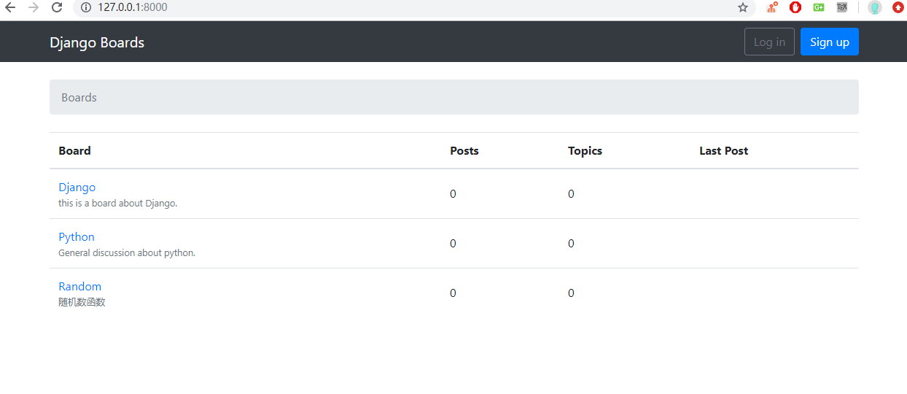
Login 首先，添加一个新的 URL 路径1 2 3 accounts/urls.py path('login/',auth_views.LoginView.as_view(template_name='login.html'), name='login'),
上面的链接直接将路径的名字给定了，所以我们只需要在 templates 下新建一个 login.html 即可。无意间发现，我们将 templates/signup.html 的文件复制进去，效果是一样的。这就是 Forms API 和 表单模板的威力，真的牛皮。但是我们还是需要有些微不同的，下方的登录需要修改为注册，还有忘记密码的部分。
1 2 3 4 5 6 7 8 9 10 11 12 13 14 15 16 17 18 19 20 21 22 23 24 25 26 27 28 29 30 31 32 33 34 35 36 37 {% extends 'base.html' %} {% load static %} {% block stylesheet %} <link rel="stylesheet" href="{% static 'css/accounts.css' %}"> {% endblock %} {% block body %} <div class="container"> <h1 class="text-center logo my-4"> <a href="{% url 'home' %}">Django Boards</a> </h1> <div class="row justify-content-center"> <div class="col-lg-4 col-md-6 col-sm-8"> <div class="card"> <div class="card-body"> <h3 class="card-title">Log in</h3> <form method="post" novalidate> {% csrf_token %} {% include 'includes/form.html' %} <button type="submit" class="btn btn-primary btn-block">Log in</button> </form> </div> <div class="card-footer text-muted text-center"> New to Django Boards? <a href="{% url 'signup' %}">Sign up</a> </div> </div> <div class="text-center py-2"> <small> <a href="#" class="text-muted">Forgot your password?</a> </small> </div> </div> </div> </div> {% endblock %}
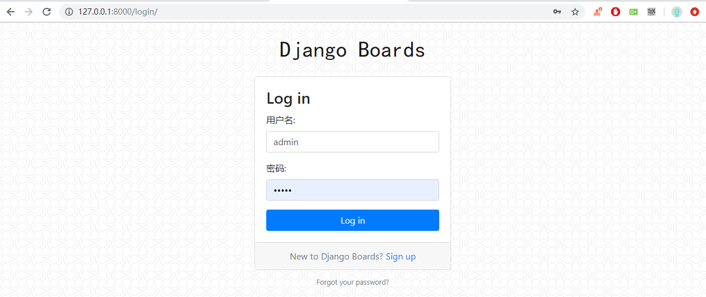
重置密码 对于密码重置过程，我们需要发送电子邮件。一开始有点复杂，因为我们需要外部服务。目前，我们不会配置生产环境使用的电子邮件服务。实际上，在开发阶段，我们可以使用 Django 的调试工具检查电子邮件是否正确发送。在 myproject/settings.py 配置EMAIL_BACKEND ='django.core.mail.backends.console.EmailBackend'
密码重置过程需要四个视图
带有表单的页面，用于重置过程
一个成功的页面
检查电子邮件是否发送 token 的页面
一个告诉用户重置是否成功的页面
这些视图都是内置的，我们不需要任何操作，我们需要做的就是将路径添加到 urls.py 并且创建模板。
1 2 3 4 5 6 7 8 9 10 11 12 13 14 15 16 17 # ---- 其他路由 ---- path('reset/', auth_views.PasswordResetView.as_view( template_name='password_reset.html', # 路由绑定的页面 email_template_name='password_reset_email.html', # 发送邮件之后跳转的页面 subject_template_name='password_reset_subject.txt' # 邮件内容 ), name='password_reset'), path('reset/done/', auth_views.PasswordResetDoneView.as_view(template_name='password_reset_done.html'), name='password_reset_done'), #点击发送邮件之后的页面 re_path('^reset/(?P<uidb64>[0-9A-Za-z_\-]+)/(?P<token>[0-9A-Za-z]{1,13}-[0-9A-Za-z]{1,20})/$', auth_views.PasswordResetConfirmView.as_view(template_name='password_reset_confirm.html'), name='password_reset_confirm'), # 重置密码的链接 输入新密码的页面 path('reset/complete/', auth_views.PasswordResetCompleteView.as_view(template_name='password_reset_complete.html'), name='password_reset_complete'), # 完成重置模块的页面
在 templates 文件夹中，新增如下模板文件
password_reset.html 重置密码的跳转页面password_reset_email.html 这个模板是发送给用户的电子邮件正文password_reset_subject.txt 这个模板是电子邮件的主题行，它应该是单行文件password_reset_done.html 发送邮件后的跳转页面password_reset_confirm.html 重置密码的页面password_reset_complete.html 重置成功的页面
按照 Github托管的 HTML 模板 找到静态文本将内容补齐即可。
修改 templates/login.html 下的 Forget your password 指向的链接
1 2 templates/login.html <a href="{% url 'password_reset' %}" class="text-muted">Forgot your password?</a>
点击忘记密码，直接跳转如下页面
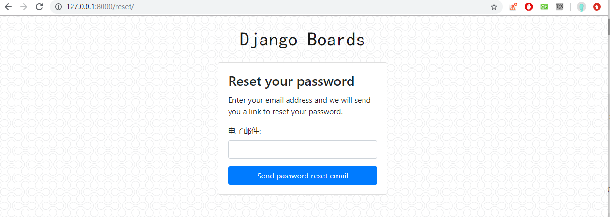
在 myproject/settings.py 中配置发送邮件的功能
1 2 3 4 5 6 7 EMAIL_HOST = 'smtp.qq.com' EMAIL_PORT = 25 #发件箱的smtp服务器端口 EMAIL_HOST_USER = 'aaa@qq.com' # 你的 QQ邮箱 账号 EMAIL_HOST_PASSWORD = 'aaaa'#QQ邮箱授权码 EMAIL_USE_TLS = True # 这里必须是 True，否则发送不成功 EMAIL_FROM = 'aaa@qq.com' # # 你的 QQ邮箱 账号 DEFAULT_FROM_EMAIL = 'aaa@qq.com'# 你的 QQ邮箱 账号
这个需要你的邮箱是开通 STMP 服务的，进入到 QQ 邮箱的设置功能，开启 STMP 服务，然后将授权码复制到上面的代码中
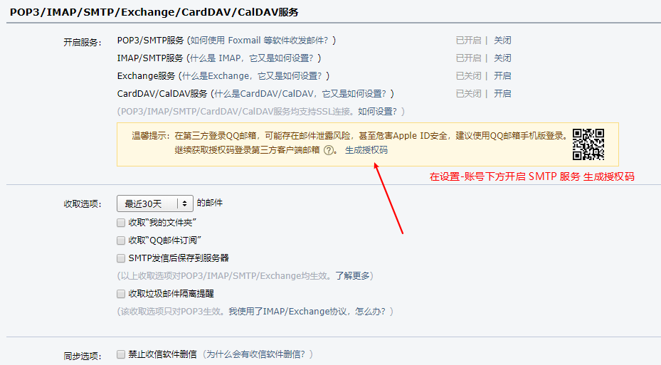
输入邮件之后，点击发送既跳转到下面的页面
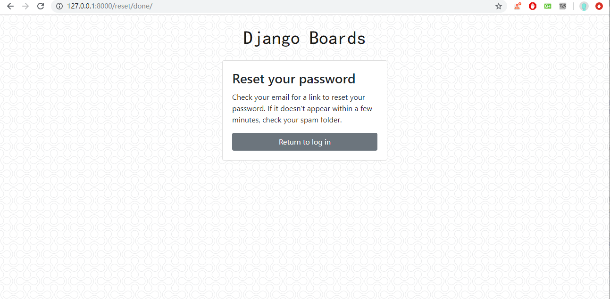
点击邮件中的链接，即可进入到修改链接页面
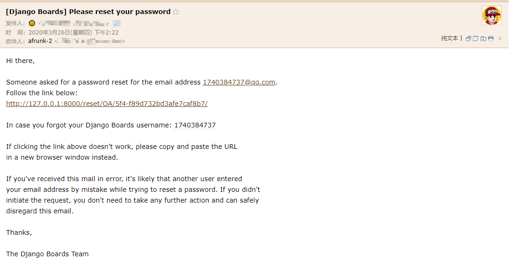
然后就进入了重置密码的页面了
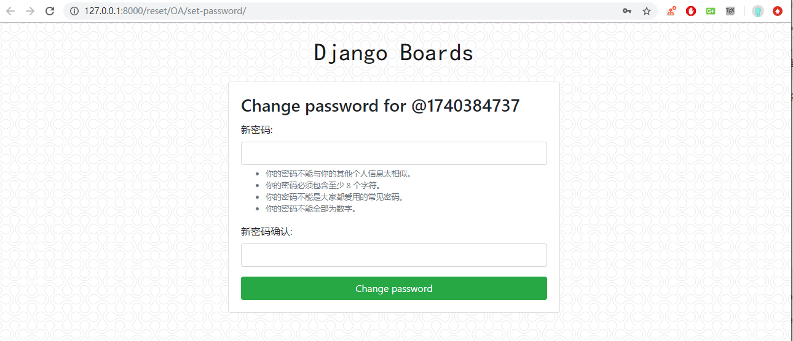
发送邮件重置密码的部分就完成了，难点就是在于如何使用 Django 内置的模块和如何美化前端模板。
修改密码 此视图旨在提供给希望更改密码的登录用户使用。通常，这些表单由三个字段组成：旧密码、新密码、新密码确认。
1 2 3 4 5 # 其他路由配置 path(r'settings/password/', auth_views.PasswordChangeView.as_view(template_name='password_change.html'), name='password_change'), path(r'settings/password/done/', auth_views.PasswordChangeDoneView.as_view(template_name='password_change_done.html'), name='password_change_done'),
这些视图仅适合登录用户，他们使用名为 @login_required 的装饰器，此装饰器可防止非授权用户访问此页面。如果用户没有登录，将重定向到登录页面。
LOGIN_URL = 'login'
然后是修改密码和修改成功的模板页面修改，参考 Github托管的 HTML 模板 补齐即可。
Conclusions 内容这么多主要是引入第三方框架优化布局，本章节最强的地方主要复用表单模板，这个模板在 Django 中应该是大小通吃的。
重置密码的模块全部都是调用的内置模块，但是也需要自行配置发件箱，难度其实很小，但是不捉摸的话其实也不是那么容易实现。
Reference